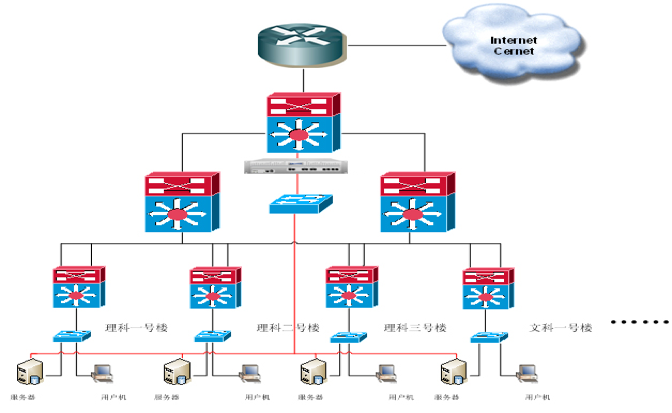
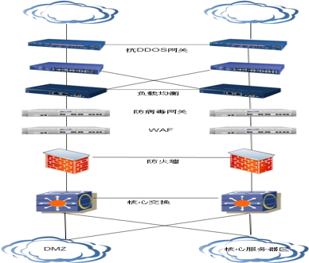

IPS入侵防护系统
产品概述
IPS可依照一定的安全策略，对网络运行状况进行监视，可有效过滤病毒、木马、蠕虫、间谍软件、漏洞攻击、逃逸攻击等安全威胁，及时识别并阻断入侵行为和未授权网络流量并实时报警，为用户提供 L2-L7 层网络安全防护。
产品亮点
一体化引擎技术
IPS将应用识别、内容检测、URL过滤、入侵检测、病毒识别五个处理引擎合为一个，采用自创高效的正则匹配算法，实现对报文的高效一次性处理。IPS的一体化引擎一次扫描提取报文的信息会根据开启的深度扫描功能动态调整，避免不必要的资源消耗。
持续更新的威胁特征库
特征比对依然是当前入侵检测最常用的技术，也是比较有效和高效的检测方法，依托强大的攻防研究团队，不断进行各种攻防实验研究、新型攻击挖掘，定期更新IPS的威胁特征库，在保障大量已知攻击被准确检测之外，及时响应各种新的攻击，保证入侵检测引擎的识别能力、误报控制都处于业界领先水平。
智能协议识别和深度协议解析
协议识别和分析，是作为检测和防范大量基于应用层的攻击的重要技术，智能协议识别打破传统的通过协议-- 端口映射表判断网络协议的简单机制，通过分析网络报文中包含的协议特征，结合智能端口重定向和协议分析引擎，能够准确的检测出经过伪装或隐藏的、采用动态端口、基于各种应用协议的攻击；
深度协议分析也可及时发现各种协议异常和规范错误，还能将经过变形、编码、压缩的报文进行还原，以防止攻击被漏检测。
基于流量学习的基线检测
入侵行为一般都会与正常流量或报文特征存在一定的差异，但同样入侵手法并非一成不变，网络黑客会根据情况不断的变化攻击入侵手法从而试图绕过安全设备的检测和阻断。IPS可以针对正常网络的行为特征进行学习，从而产生历史数据，一旦有异常出现，则能够立即启动相应的安全策略比如告警、阻断、回探等方式进行。
IPS入侵防护系统
需求分析
目前，Web应用安全威胁呈现“多、快、高”的发展趋势，即安全事件多、蔓延速度快、安全威胁层次越来越高。被入侵或篡改所带来的危害将不仅仅限于“形象”的损害，甚至会造成巨大的经济损失，网站面临的安全风险日益加剧。
网站数据泄露或内容被修改
网站出现敏感言论
各种敏感言论将影响政府网站的形象，带来政治风险，后果极为严重；
网页木马还会威胁到浏览者的客户端,使政府的权威性和公信力受到打击；
缺乏网站建设维护机制
方案概述
WAF产品部署在WEB服务器前，实现了IPV4/IPV6双协议栈下的HTTP/HTTPS流量相关内容的实时分析检测、过滤，来精确判定并阻止各种入侵攻击、恶意代码与非法行为，阻断对Web服务器的恶意访问与非法操作，并提供实时在线的网站内容防篡改、内容防泄漏、防病毒与敏感信息发布过滤，适应Web2.0时代的主动实时监测过滤风险技术，将恶意代码、非授权篡改、应用攻击等众多因素结合在一起进行综合防范，从而做到对Web服务器的多重保护。

应用效果
防攻击，阻断对Web服务器的恶意访问与非法操作。
防篡改，启用WAF产品中防篡改模式后，对于可能已被篡改的文件，将向管理员发送邮件报警。提供手工页面同步功能，即时更新缓存的文件内容。
敏感内容防泄漏，WAF设备可以对向Web服务器提交的URL、URL参数、POST表单内容和Cookie的内容进行禁用词过滤，预防潜在危险。
防恶意代码，WAF产品内置病毒特征库，对上传到Web服务器和FTP服务器的文件可根据特征库进行病毒扫描；
有效的统计分析攻击和访问数据，WAF产品可针对网站域名、IP及URL 进行攻击、访问及爬虫统计及分析。
产品案例
上海某政府网站是政府职能部门信息化建设的重要内容，主要进行政府的信息公开、在线办事、政民互动等业务。而近年来，随着政务网站所运行业务的重要性逐渐增加以及其公众性质使其成为攻击和威胁的主要目标，政府网站所面临的Web应用安全问题越来越复杂，混合威胁的风险正在飞速增长，如网页篡改、蠕虫病毒、DDoS攻击、SQL 注入、跨站脚本、Web应用安全漏洞利用等，极大地困扰着政府和公众用户，给政府的政务形象、信息网络和核心业务造成严重的破坏。
主要威胁如下：
网页挂马：将网页中植入恶意代码或链接，以便在用户打开网页时向用户的电脑安装木马软件；
网站网页中存在恶意脚本，容易被跨站脚本（XSS）攻击；
SQL注入攻击：未经授权状况下操作数据库中的数据、恶意篡改网页内容、私自添加系统帐号或者是数据库使用者帐号、网页挂木马；
内部目录泄露、弱口令攻击；
解决方案
在上海门户网站的2条出口链路上分别部署防毒墙和WAF产品。WAF产品将应用攻击、非授权篡改、恶意代码等众多因素结合在一起进行综合防范，从而做到对Web服务器的多重保护，检测过滤SQL注入、跨站脚本攻击、命令行注入、弱口令攻击等攻击行为，防止网站被篡改、网站数据库内容泄露、系统管理员权限被窃取等破坏行为，防止网站被挂马、植入后门、间谍软件等恶意代码。

WAF及防毒墙部署图
实现效果
防止敏感信息泄露：通过对网页内容进行深度扫描检测，快速、准确的分析判断网页页面是否含有非法敏感信息，实时告警响应，阻止不良信息的扩散，满足等级保护的相关要求；
通过对HTTP/HTTPS协议进行深入的解析，精确的识别出协议中的各种要素，比如 Cookie、Get参数、Post表单等，杜绝各种利用协议漏洞的攻击和权限，阻止各种行为的SQL注入、跨站脚本、命令注入等攻击行为；
时检测网页是否挂马，并实时告警响应，为网站安全提供及时有效支持。
 官方微博
官方微博 官方微信
官方微信
 传统企业网信息安全解决方案
传统企业网信息安全解决方案